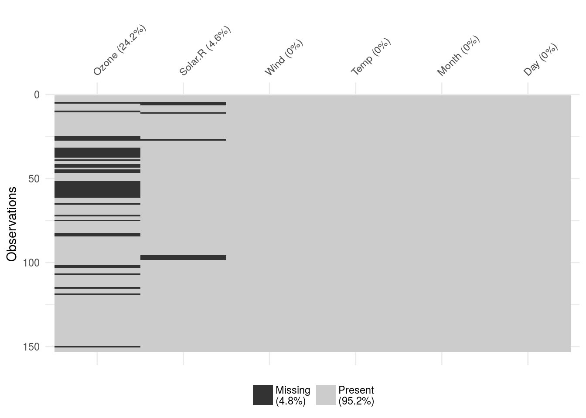
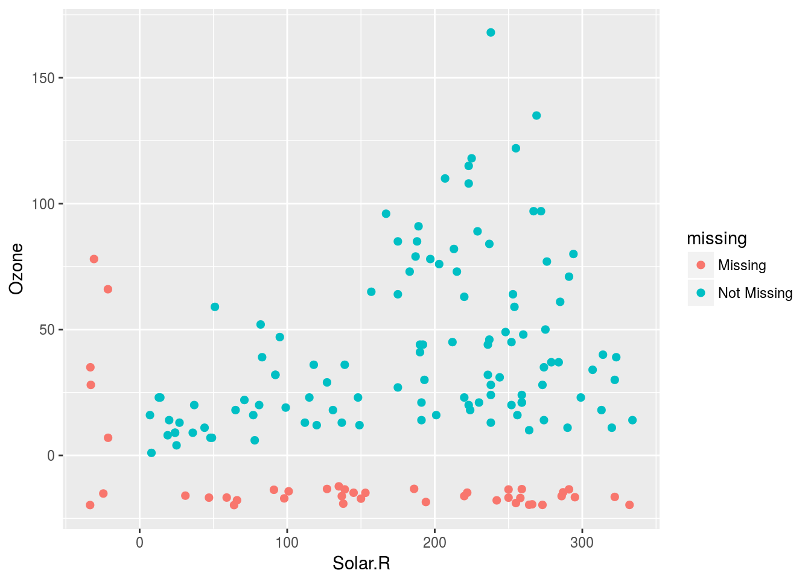
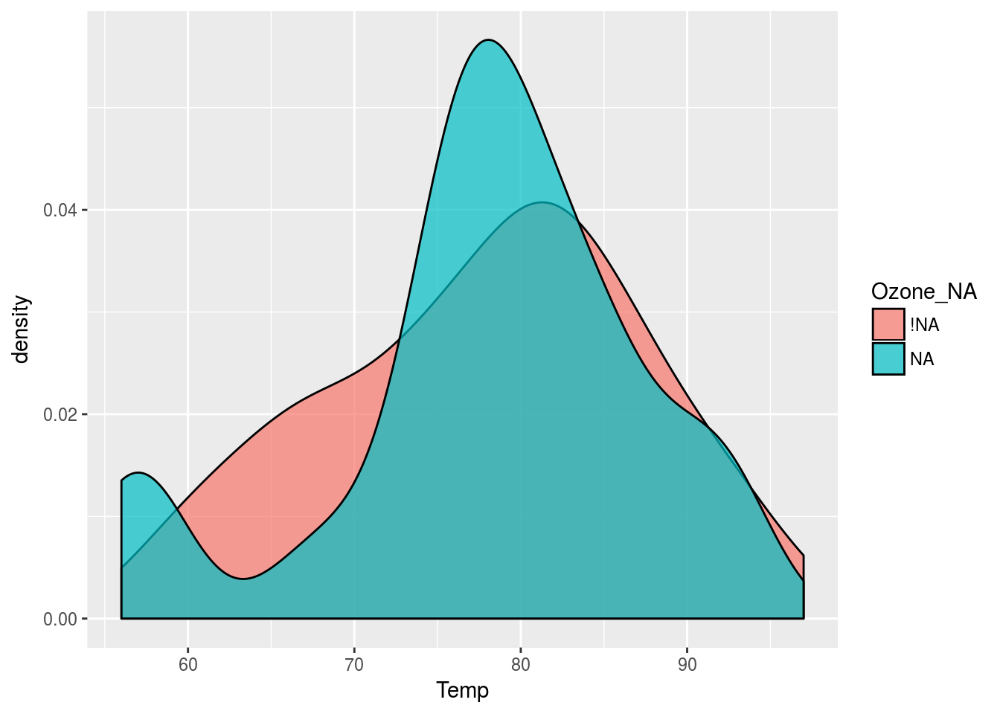
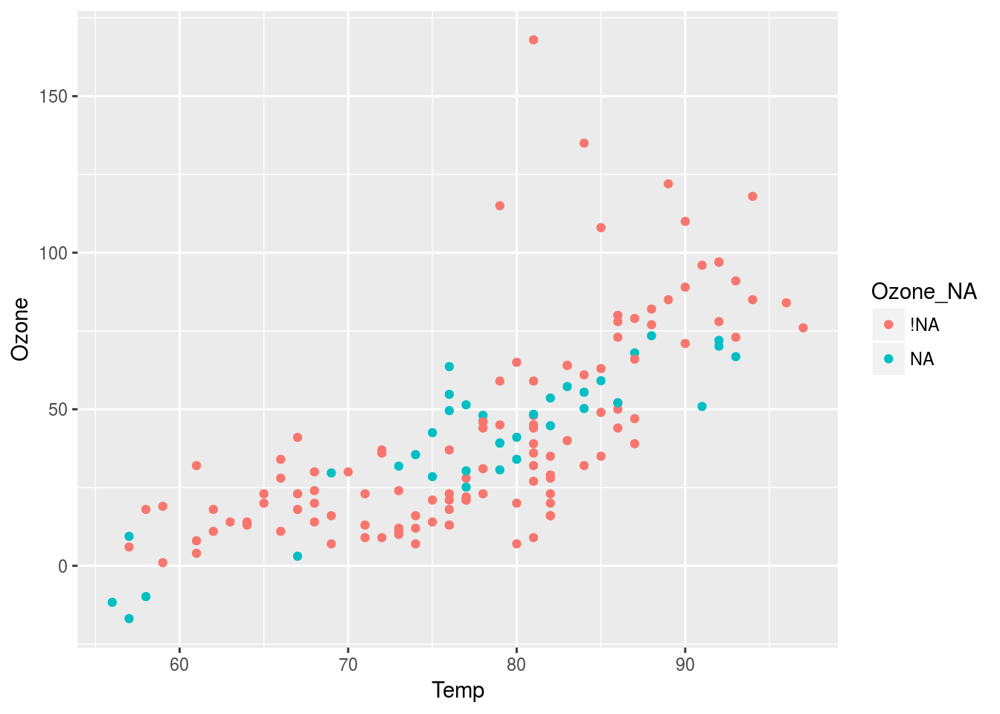
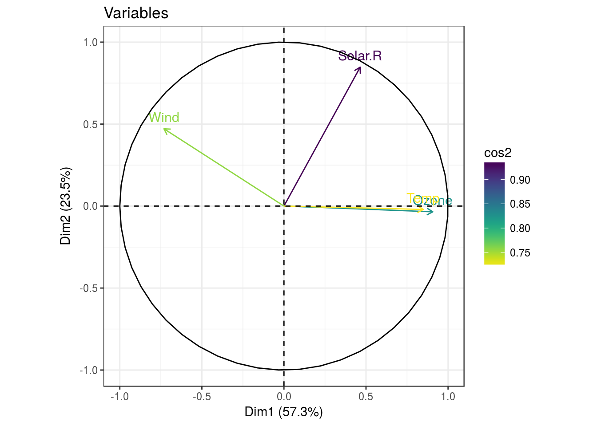

Note : Cet article est fortemment inspiré d’une présentation à la rstudio::conf 2018 sur le traitement des données manquantes.
En tant que data scientist, rares sont les jeux de données auxquels nous sommes confrontés qui ne comportent pas de valeurs manquantes, les fameux NA, pour “Non applicable”.
L’option de facilité
La manière la plus simple de gérer les valeurs manquantes, c’est de les retirer. Dans certain cas, il peut effectivement s’agir de la meilleure solution.

Cependant, en règle générale, les valeurs manquantes sont révélatrice de la qualité du jeu de données utilisé. De plus, leur analyse n’est pas forcémment dénuée de sens et peut apporter des informations supplémentaires à l’étude.
Pour cet article, on se basera sur le dataset airquality, un jeu de données représentant les mesures de différents composants atmosphériques à différentes dates.
library(dplyr)
airquality <- tbl_df(airquality)
airquality## # A tibble: 153 x 6
## Ozone Solar.R Wind Temp Month Day
## <int> <int> <dbl> <int> <int> <int>
## 1 41 190 7.40 67 5 1
## 2 36 118 8.00 72 5 2
## 3 12 149 12.6 74 5 3
## 4 18 313 11.5 62 5 4
## 5 NA NA 14.3 56 5 5
## 6 28 NA 14.9 66 5 6
## 7 23 299 8.60 65 5 7
## 8 19 99 13.8 59 5 8
## 9 8 19 20.1 61 5 9
## 10 NA 194 8.60 69 5 10
## # ... with 143 more rowsOn remarque déjà la présence de NA pour les variables Ozone et Solar.R. Certaines observations présentent un NA pour ces deux paramètres simultanés.
Le jeu de données est dit “tidy” (une observation par ligne, une variable par colonne), nous allons donc pouvoir appliquer les méthodes du tidyverse pour analyser un peu ces valeurs absentes.
Les packages nécessaires :
En plus des outils classiques du tidyverse (dplyr,ggplot2), nous allons utiliser deux packages dédiés aux valeurs manquantes :
library(tidyverse)
library(visdat)
library(naniar)Le concept de data-shadow
Le package naniar introduit un concept intéréssant pour l’étude des NA : les data-shadow.
Comme le nom l’indique, il s’agit de l’ombre des données utilisées, qui vont être codés de façon binaire : “NA” ou “!NA”.
Exemple :
# On considère un sous-échantillon pour l'exemple
airquality[4:7,1:3] %>% bind_shadow()## # A tibble: 4 x 6
## Ozone Solar.R Wind Ozone_NA Solar.R_NA Wind_NA
## <int> <int> <dbl> <fct> <fct> <fct>
## 1 18 313 11.5 !NA !NA !NA
## 2 NA NA 14.3 NA NA !NA
## 3 28 NA 14.9 !NA NA !NA
## 4 23 299 8.60 !NA !NA !NAUn deuxième tableau, représentant l’ombre du premier, vient donc se greffer à sa droite. C’est ce sous tableau qui va faciliter l’analyse des données manquantes.
Quantification des valeurs manquantes
C’est parti pour les analyses !
Dans un premier temps, on va observer graphiquement la répartition des NA à l’aide du package visdat.
vis_miss(airquality)
Les données d’ozone semblent être les plus fragiles, avec près d’un quart de valeurs manquantes. Il manque également des données de radiation solaire.
Maintenant, il est possible de résumer les valeurs manquantes sous forme d’un summary classique :
miss_var_summary(airquality)## # A tibble: 6 x 4
## variable n_miss pct_miss n_miss_cumsum
## <chr> <int> <dbl> <int>
## 1 Ozone 37 24.2 37
## 2 Solar.R 7 4.58 44
## 3 Wind 0 0 44
## 4 Temp 0 0 44
## 5 Month 0 0 44
## 6 Day 0 0 44On a donc 37 valeurs manquantes pour l’ozone et 7 pour les radiations. Essayons de rentrer un peu plus dans le détail avec dplyr :
airquality %>%
group_by(Month) %>%
miss_var_summary() %>%
filter(n_miss > 0) # On ne regarde que les NA## # A tibble: 7 x 5
## Month variable n_miss pct_miss n_miss_cumsum
## <int> <chr> <int> <dbl> <int>
## 1 5 Ozone 5 16.1 5
## 2 5 Solar.R 4 12.9 9
## 3 6 Ozone 21 70.0 21
## 4 7 Ozone 5 16.1 5
## 5 8 Ozone 5 16.1 5
## 6 8 Solar.R 3 9.68 8
## 7 9 Ozone 1 3.33 1Tiens, la majorité des NA proviennent du mois de juin…
Maintenant, faisons appel à une autre de nos librairies préférées : ggplot2, en l’associant avec geom_miss_point fourni par naniar.
ggplot(data=airquality, aes(x=Solar.R, y = Ozone)) +
geom_miss_point()
Cette représentation graphique permet de visualiser l’origine des valeurs manquantes en observant deux variables en simultané. De ce fait, cette visualisation permet d’identifier l’origine de ces valeurs manquantes : Dans quelles valeurs de radiations solaires nous manque-t-il plus de valeurs d’Ozone correspondantes ?
Utilisation des data-shadow
La représentation graphique peut être poussée plus loin, c’est donc ici que nous ferons appel aux data-shadow :
# Graphiquement
airquality %>%
bind_shadow() %>%
ggplot(aes(x=Temp, fill = Ozone_NA)) +
geom_density(alpha=0.7)
Intéressant, il semblerait donc que les NA d’ozone se concentrent particulièrement sur les températures de 80°.
Bien d’autres fonctions super intéressantes existent dans les deux packages utilisés, je vous renvoie donc vers leurs vignettes pour aller plus loin.
L’imputation
Selon les jeux de données, un NA n’aura pas toujours la même signification. En écologie, par exemple, l’absence d’une espèce sur un site peut souvent être traduite en NA (case laissée vide par l’opérateur dans le tableur). Dans ce cas particulier, le NA peut être traduit en 0 sans que cela ne cause réellement de problème. Il reste cependant le risque que le NA ne soit pas une case vide mais plutôt une erreur de saisie ou une information perdue lors du transfert d’informations. En revanche, pour des données de température par exemple, un NA ne peut être traduit en “0°C”. Dans le cas où les lignes de NA sont en très faible effectif, la solution peut donc être ici de tout simplement retirer ces ligne à l’aide de na.omit.
Cependant, lorsque l’on jette un coup d’oeil à nos données
airquality## # A tibble: 153 x 6
## Ozone Solar.R Wind Temp Month Day
## <int> <int> <dbl> <int> <int> <int>
## 1 41 190 7.40 67 5 1
## 2 36 118 8.00 72 5 2
## 3 12 149 12.6 74 5 3
## 4 18 313 11.5 62 5 4
## 5 NA NA 14.3 56 5 5
## 6 28 NA 14.9 66 5 6
## 7 23 299 8.60 65 5 7
## 8 19 99 13.8 59 5 8
## 9 8 19 20.1 61 5 9
## 10 NA 194 8.60 69 5 10
## # ... with 143 more rowsIl semble dommage de retirer les lignes comportant des NA, alors qu’elles comportent au moins toujours des données de température. Cependant, certaines méthodes, la PCA par exemple, n’acceptent que des tableaux sans NA comme données d’entrée.
La solution qui s’impose alors est l’imputation
Imputation ? kézako ?
L’imputation est une technique qui permet de modéliser les valeurs manquantes selon des modèles pré-établis. Il existe des tas de modèles et le plus dur dans l’imputation reste de définir quel modèle utiliser en fonction de notre jeu de données. Quelques exemples :
- imputation moyenne : On remplace chaque NA par la moyenne globale de la variable (
na.rm=TRUEof course) - imputation linéaire : Une régression entre la variable à imputer et une ou plusieurs autres variables plus complètes peut, à condition que la relation soit correcte, permettre de “prédire” les données manquantes. Une telle régression peut être validée visuellement par les outils présentés plus haut combinés à un package dédié aux imputations :
simputation
library(simputation)
airquality %>%
bind_shadow() %>%
simputation::impute_lm(Ozone ~ Temp + Wind) %>%
ggplot(aes(x=Temp,y=Ozone,color=Ozone_NA)) +
geom_point()
Imputation multivariée
Je mentionnais les PCA tout à l’heure. Il arrive parfois d’avoir un très grand jeu de données “à trou”, où il est impossible de retirer les lignes présentant au moins un NA sous peine de virer plus de la moitié des données. Une autre méthode d’imputation, optimisée pour les analyses multivariées, a été développée dans le package missMDA.
Ce package, complément de FactomineR, permet de faire de l’umputation simple et multiple. Le package impute les valeurs manquantes de sorte que les valeurs imputées n’aient pas d’influence sur les résultats de l’analyse factorielle, elles sont calculées de sortes à ce qu’elles rendent juste possible l’analyse.
L’imputation se fait elle-même par des méthodes de réduction dimensionnelles (type ACP), ce qui lui permet de traiter de gros volumes de données.
Plus d’infos : missMDA
library(missMDA)
# On passe d'abord tout en quantitatif, et on repasse au format df (missMDA n'est pas à la mode !)
airquality <- airquality %>%
mutate_all(as.numeric) %>%
as.data.frame()
# Choix du nombre d'axes à conserver pour l'imputation
nb <- estim_ncpPCA(airquality,ncp.max=5)
nb ## 1 axe est à conserver pour l'imputation ## $ncp
## [1] 0
##
## $criterion
## 0 1 2 3 4 5
## 1520.506 1823.946 1771.702 2774.323 2888.306 6369.592impute_air <- MIPCA(airquality,ncp=1) # Imputation
airquality2 <- tbl_df(impute_air$res.imputePCA)
airquality2## # A tibble: 153 x 6
## Ozone Solar.R Wind Temp Month Day
## <dbl> <dbl> <dbl> <dbl> <dbl> <dbl>
## 1 41.0 190 7.40 67.0 5.00 1.00
## 2 36.0 118 8.00 72.0 5.00 2.00
## 3 12.0 149 12.6 74.0 5.00 3.00
## 4 18.0 313 11.5 62.0 5.00 4.00
## 5 7.23 137 14.3 56.0 5.00 5.00
## 6 28.0 153 14.9 66.0 5.00 6.00
## 7 23.0 299 8.60 65.0 5.00 7.00
## 8 19.0 99.0 13.8 59.0 5.00 8.00
## 9 8.00 19.0 20.1 61.0 5.00 9.00
## 10 31.4 194 8.60 69.0 5.00 10.0
## # ... with 143 more rowsL’ACP devient donc possible.
library(FactoMineR) ; library(factoextra) ;library(ggthemes);library(viridis)
airquality2 <- airquality2 %>% mutate_at(vars(Month, Day), as.character)
# On garde la date en explicatif
res.pca <- PCA(airquality2,quali.sup=c(5,6), graph = FALSE)
# Variables
fviz_pca_var(res.pca,col.var="cos2",col.circle="black",title = "Variables",
col.quanti.sup="chartreuse4") + theme_bw() +
scale_color_viridis(direction=-1)
Informations de session
sessionInfo()## R version 3.4.4 (2018-03-15)
## Platform: x86_64-pc-linux-gnu (64-bit)
## Running under: Ubuntu 16.04.4 LTS
##
## Matrix products: default
## BLAS: /usr/lib/libblas/libblas.so.3.6.0
## LAPACK: /usr/lib/lapack/liblapack.so.3.6.0
##
## locale:
## [1] LC_CTYPE=fr_FR.UTF-8 LC_NUMERIC=C
## [3] LC_TIME=fr_FR.UTF-8 LC_COLLATE=fr_FR.UTF-8
## [5] LC_MONETARY=fr_FR.UTF-8 LC_MESSAGES=fr_FR.UTF-8
## [7] LC_PAPER=fr_FR.UTF-8 LC_NAME=C
## [9] LC_ADDRESS=C LC_TELEPHONE=C
## [11] LC_MEASUREMENT=fr_FR.UTF-8 LC_IDENTIFICATION=C
##
## attached base packages:
## [1] stats graphics grDevices utils datasets methods base
##
## other attached packages:
## [1] viridis_0.5.0 viridisLite_0.3.0 ggthemes_3.4.0
## [4] factoextra_1.0.5 FactoMineR_1.40 missMDA_1.11
## [7] simputation_0.2.2 bindrcpp_0.2 naniar_0.2.0
## [10] visdat_0.1.0 forcats_0.2.0 stringr_1.3.0
## [13] purrr_0.2.4 readr_1.1.1 tidyr_0.8.0
## [16] tibble_1.4.2 ggplot2_2.2.1 tidyverse_1.2.1
## [19] dplyr_0.7.4
##
## loaded via a namespace (and not attached):
## [1] httr_1.3.1 jsonlite_1.5 splines_3.4.4
## [4] modelr_0.1.1 assertthat_0.2.0 cellranger_1.1.0
## [7] ggrepel_0.7.0 yaml_2.1.18 pillar_1.1.0
## [10] backports_1.1.2 lattice_0.20-35 glue_1.2.0
## [13] digest_0.6.15 rvest_0.3.2 colorspace_1.3-2
## [16] Matrix_1.2-13 htmltools_0.3.6 plyr_1.8.4
## [19] psych_1.7.8 pkgconfig_2.0.1 broom_0.4.3
## [22] haven_1.1.1 mvtnorm_1.0-7 scales_0.5.0
## [25] gower_0.1.2 ggpubr_0.1.6 nnet_7.3-12
## [28] lazyeval_0.2.1 cli_1.0.0 mnormt_1.5-5
## [31] survival_2.41-3 magrittr_1.5 crayon_1.3.4
## [34] readxl_1.0.0 memoise_1.1.0 evaluate_0.10.1
## [37] mice_2.46.0 fs_1.2.2 nlme_3.1-137
## [40] MASS_7.3-48 xml2_1.2.0 foreign_0.8-69
## [43] tools_3.4.4 hms_0.4.1 munsell_0.4.3
## [46] cluster_2.0.7 flashClust_1.01-2 compiler_3.4.4
## [49] pkgdown_0.1.0.9000 rlang_0.2.0 grid_3.4.4
## [52] rstudioapi_0.7 leaps_3.0 labeling_0.3
## [55] rmarkdown_1.9 gtable_0.2.0 roxygen2_6.0.1
## [58] reshape2_1.4.3 R6_2.2.2 gridExtra_2.3
## [61] lubridate_1.7.2 knitr_1.20 utf8_1.1.3
## [64] bindr_0.1 commonmark_1.4 rprojroot_1.3-2
## [67] desc_1.1.1 stringi_1.1.7 parallel_3.4.4
## [70] Rcpp_0.12.16 rpart_4.1-13 scatterplot3d_0.3-41
## [73] tidyselect_0.2.3